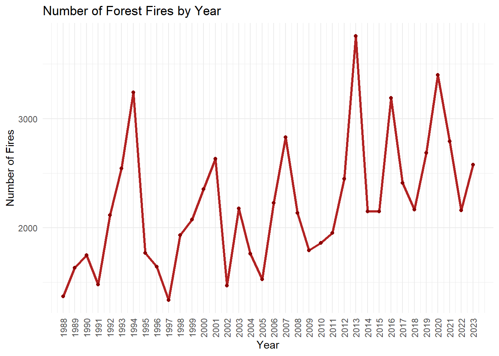
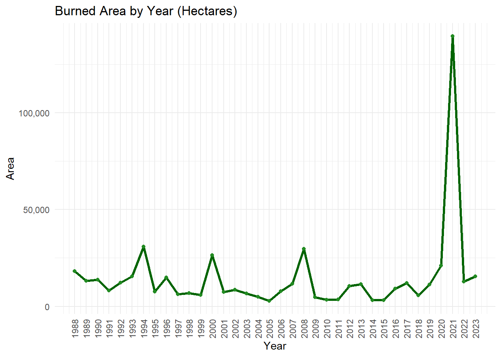
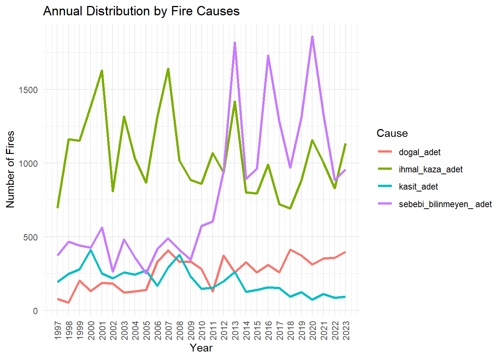
Ece Zeynep Aktaş
İrem Çatalkaya
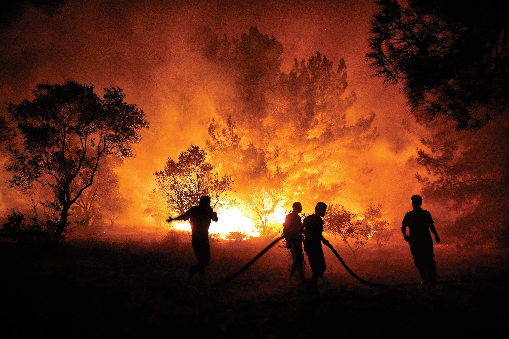
The problem we have chose to inspect is investigating causes of forest fires occurred in Turkey and creating actionable insights to prevent them. The reason we have chose to study this particular problem is; data being official source that offers us years of multi-faceted content to explore and is suitable to working with the R programming language. The structure of data consists of distribution of forest fires across counties, the categorization of their causes, and the silvicultural practices employed for forest management and establishment. The data we have studied on is taken from Orman Genel Müdürlüğü official website.
You can access the relevant .RData file from the link:
Let’s take a look at the characteristics of data:
The following steps were taken when transferring data to the R environment:
Editing File Names: Since Turkish characters (ç, ğ, ü, ö, ş, ı) in file names in Turkish can cause errors, the Turkish characters in the file names were converted to English characters. For example: “b?lge_mudurluklerine_sayisal_olarak_2004_2023.xlsx” file was changed to “bolge_mudurluklerine_sayisal_olarak_2004_2023.xlsx”.
Data Cleaning: Irrelevant explanations, visuals and empty lines in the Excel files is deleted to make datasets easily readable and processable.
Editing Column Names: Turkish characters in the column names are replaced with English characters (such as Sehir instead of City, Bolge instead of Region). Column names are replaced with more descriptive ones. For example: Main categories of negligence, accident, and intent got more detailed according to the causes of fire and got named as: ihmal_copluk, ihmal_avcilik, kaza_trafik, kaza_energy, kaza_yangin, kaza_aniz
Editing the Data Structure: Data in the same category were brought together.
Data Import: Data was imported from the xlsx package with the read.xlsx() function (encoding = "UTF-8" was used).
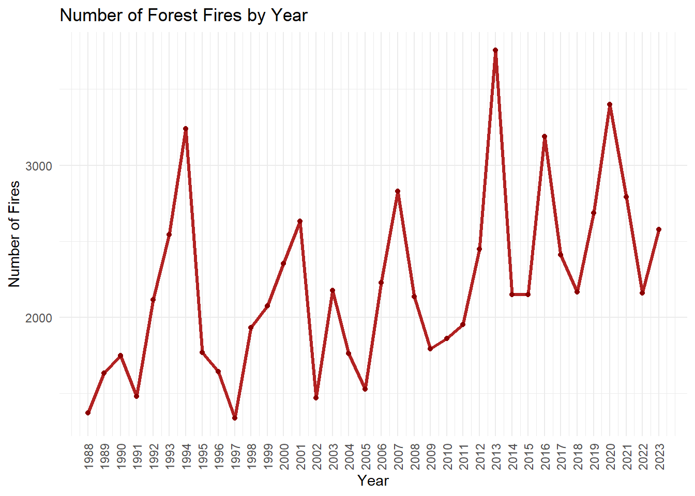
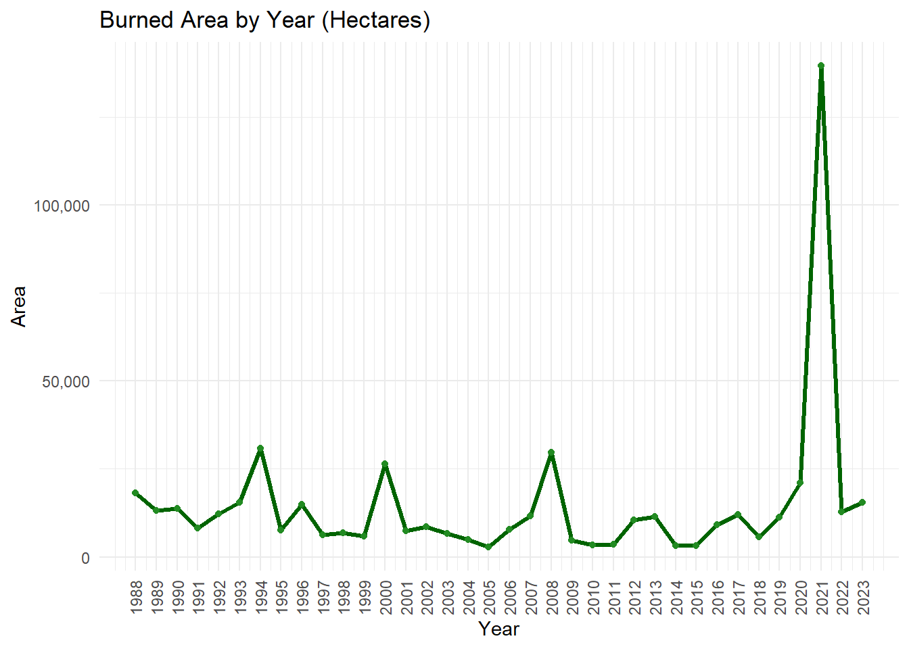
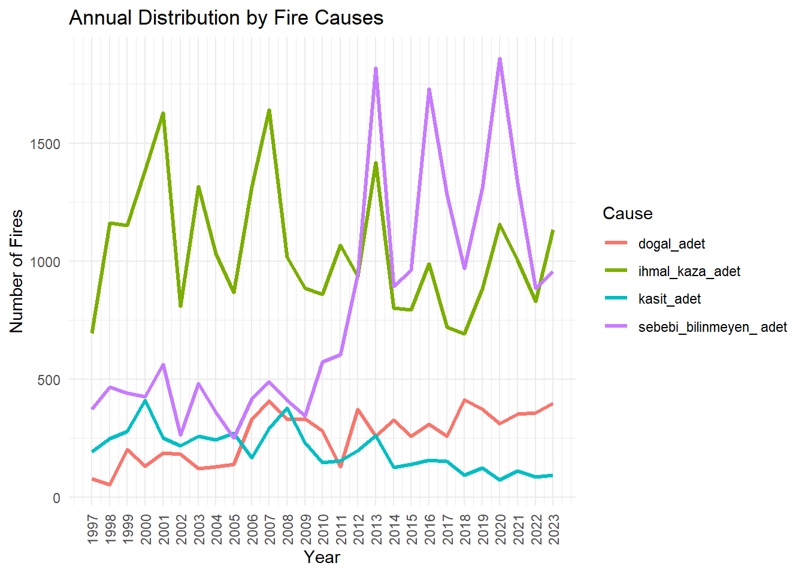
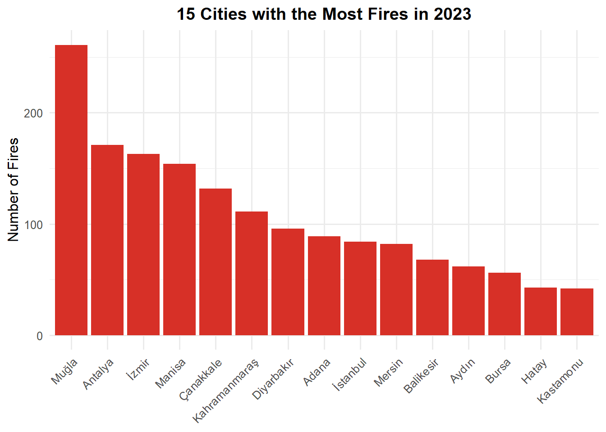
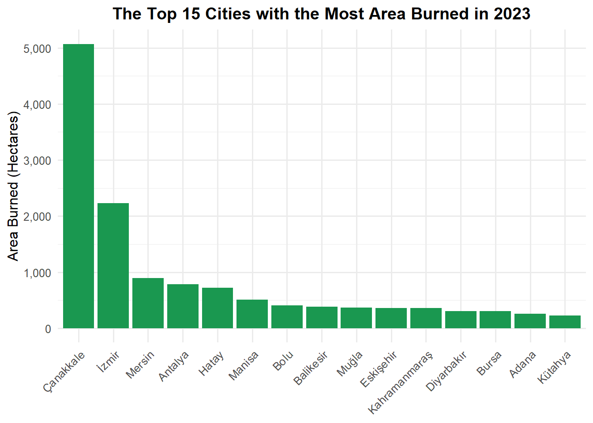
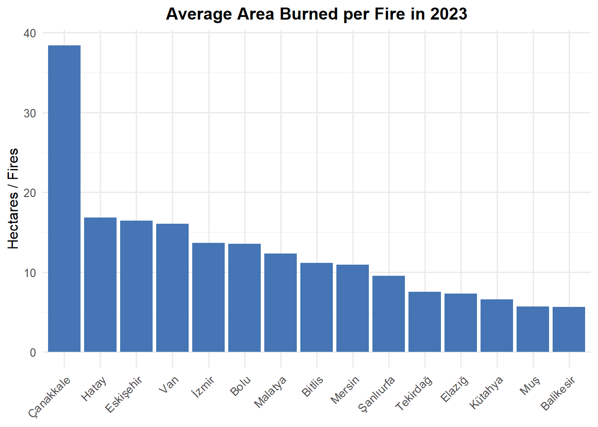
This interactive map shows the average area burned per fire (hectares / number of fires) by cities in 2023. The bigger the point, the severe the fires are.
library(readxl)
library(dplyr)
library(tidyr)
library(ggplot2)
library(scales)
# Veriyi oku
silvi_df <- silvikulturel_2023
colnames(silvi_df) <- c(
"bolge", "toplam_alan", "ortuye_zarar_gormeyen",
"dogal_genclestirme", "suni_genclestirme", "rehabilitasyon",
"agaclandirma", "koruma_altina_alinan", "gelecek_yila_birakilan"
)
silvi_df <- silvi_df |> filter(bolge != "Toplaml")
silvi_df <- silvi_df |> mutate(across(-bolge, ~ as.numeric(gsub("-", NA, .))))
turkiye_geneli <- silvi_df |>
select(-toplam_alan) |>
pivot_longer(cols = -bolge,
names_to = "mudahale_turu",
values_to = "alan") |>
filter(!is.na(alan)) |>
group_by(mudahale_turu) |>
summarise(toplam_alan = sum(alan)) |>
arrange(desc(toplam_alan))
cat(" Graph: Distribution of Post-Fire Intervention Types Across Turkey (2023)\n") Graph: Distribution of Post-Fire Intervention Types Across Turkey (2023)# Grafik
print(
ggplot(turkiye_geneli, aes(x = reorder(mudahale_turu, toplam_alan), y = toplam_alan)) +
geom_bar(stat = "identity", fill = "darkolivegreen4") +
coord_flip() +
labs(
title = "Distribution of Post-Fire Intervention Types (2023)",
x = "Intervention Type", y = "Total Area (ha)"
) +
theme_minimal(base_size = 11) +
theme(plot.title = element_text(face = "bold", hjust = 0.5)) +
scale_y_continuous(labels = label_comma())
)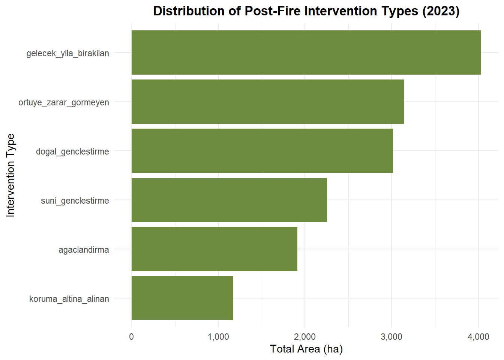
Interpretation of the Graph: The number of forest fires shows high variability but an overall upward trend and is peaking in 2021, on the other hand burned area demonstrates even more dramatic growth, particularly in recent years. The average area burned per fire has increased substantially, suggesting fires are becoming more and more severe.
Normal forest areas (koru) suffer the most damage across regional directorates.
“Areas left for next year” and “undamaged cover areas” are the most common interventions.
We also performed a location-based analysis focusing on 2023. The top 15 cities were ranked by total fire count, area burned, and average area burned per fire. These metrics highlighted regions particularly vulnerable to fires, with some cities suffering from disproportionately large burned areas per incident. This suggests inefficiencies in early detection or fire management systems.